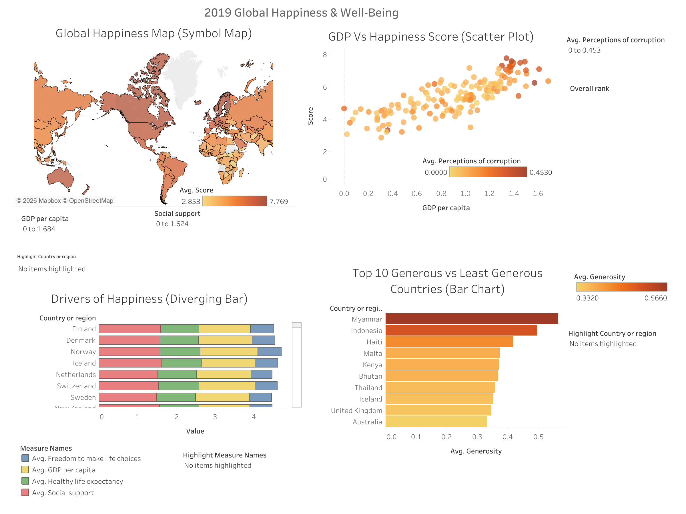

Course Projects & Labwork
A collection of data analysis assignments, Python scripts, and database queries built during my studies at UW-Madison.
My name is M.W. Ebasomba. I am a student in the Information Science and Data Science programs at UW-Madison.
Get StartedA collection of data analysis assignments, Python scripts, and database queries built during my studies at UW-Madison.
I am familiar with Python, HTML/CSS, Library Toolkits, and Tableau, focusing on on data cleaning, analysis, and visualization.
Exploring public datasets, sports analytics,and modern web design trends in my free time to sharpen my analytical and critical thinking skills.
This section showcases my core technical work and ongoing Information Science (Isci) and Data Science (Data Sci) explorations. From Python scripts and database management to interactive web design and visualizations, these featured highlights represent my hands-on approach to solving problems and translating complex information into visual insights.

Currently coursework-focused on data structures, database design, and statistical methods. Building a foundation in interpreting complex datasets and information architecture and language.
Aim to increase technical data analysis skills with hands on learning. Seeking opportunities to apply data visualization and information science skills to real-world challenges.